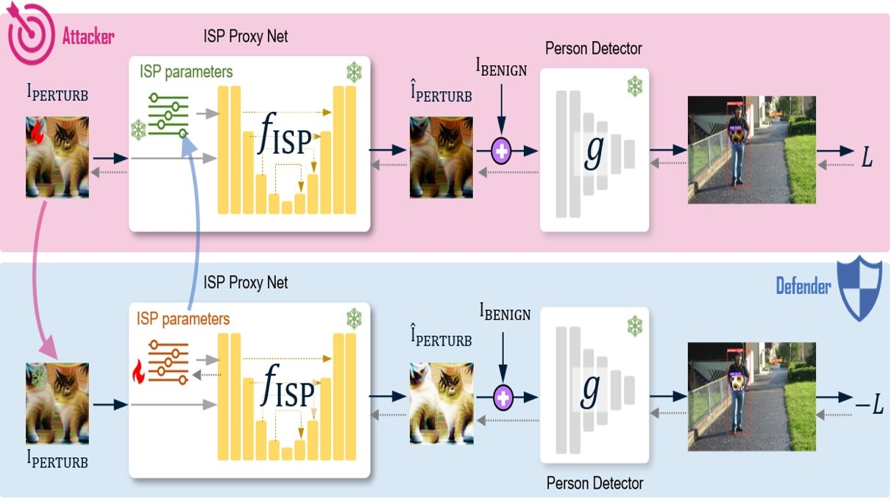
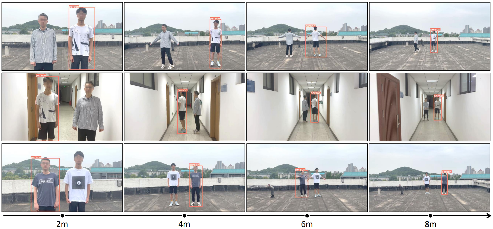
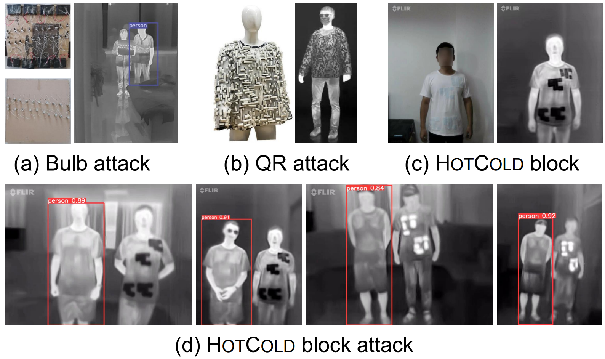

@inproceedings{wei2024revisiting,
title={Revisiting Adversarial Patches for Designing Camera-Agnostic Attacks against Person Detection},
author={Wei, Hui and Wang, Zhixiang and Zhang, Kewei and Hou, Jiaqi and Liu, Yuanwei and Tang, Hao and Wang, Zheng},
booktitle={Advances in Neural Information Processing Systems},
volume={37},
pages={8047--8064},
year={2024}
}
@inproceedings{wei2023moire,
title={Moir{\'e} Backdoor Attack (MBA): A Novel Trigger for Pedestrian Detectors in the Physical World},
author={Wei, Hui and Yu, Hanxun and Zhang, Kewei and Wang, Zhixiang and Zhu, Jianke and Wang, Zheng},
booktitle={Proceedings of the ACM International Conference on Multimedia},
pages={8828--8838},
year={2023}
}
@inproceedings{wei2023hotcold,
title={HOTCOLD Block: Fooling Thermal Infrared Detectors with a Novel Wearable Design},
author={Wei, Hui and Wang, Zhixiang and Jia, Xuemei and Zheng, Yinqiang and Tang, Hao and Satoh, Shin'ichi and Wang, Zheng},
booktitle={Proceedings of the AAAI Conference on Artificial Intelligence},
volume={37},
number={12},
pages={15233--15241},
year={2023}
}@inproceedings{wei2026canonicalphys,
title={CanonicalPhys: Pose-Robust Remote Photoplethysmography via Canonical-Space Priors},
author={Wei, Hui and Jodeiri Seyedian, Seyedata and Li, Xiaobai and Zhao Guoying},
booktitle={IEEE International Joint Conference on Biometrics},
year={2026},
organization={IEEE}
}@inproceedings{jia2026reinforcement,
title={Reinforcement-Guided Synthetic Data Generation for Privacy-Sensitive Identity Recognition},
author={Jia, Xuemei and Du, Jiawei and Wei, Hui and Chen, Jun and Zhou, Joey Tianyi and Wang, Zheng},
booktitle={Proceedings of the IEEE/CVF Conference on Computer Vision and Pattern Recognition},
pages={20034--20044},
year={2026}
}@inproceedings{hou2025fab,
title={FAB-Attack: Fabric-Aware Adversarial Attacks on Person Detectors under Motion Blur},
author={Hou, Jiaqi and Zhang, Kewei and Yang, Tianyu and Jia, Chengyu and Lin, Qiqi and Wei, Hui and Wang, Zheng},
booktitle={Proceedings of the ACM International Conference on Multimedia},
pages={7625--7634},
year={2025}
}@inproceedings{yan2025universally,
title={Universally Unfiltered and Unseen: Input-Agnostic Multimodal Jailbreaks against Text-to-Image Model Safeguards},
author={Yan, Song and Wei, Hui and Fei, Jinlong and Yang, Guoliang and Zhao, Zhengyu and Wang, Zheng},
booktitle={Proceedings of the ACM International Conference on Multimedia},
pages={11279--11287},
year={2025}
}@inproceedings{liu2025projattacker,
title={ProjAttacker: A Configurable Physical Adversarial Attack for Face Recognition via Projector},
author={Liu, Yuanwei and Wei, Hui and Jia, Chengyu and Xiao, Ruqi and Ruan, Weijian and Wei, Xingxing and Zhou, Joey Tianyi and Wang, Zheng},
booktitle={Proceedings of the Computer Vision and Pattern Recognition Conference},
pages={21248--21257},
year={2025}
}@inproceedings{jia2025balancing,
title={Balancing Privacy and Performance: A Many-in-One Approach for Image Anonymization},
author={Jia, Xuemei and Du, Jiawei and Wei, Hui and Xue, Ruinian and Wang, Zheng and Zhu, Hongyuan and Chen, Jun},
booktitle={Proceedings of the AAAI Conference on Artificial Intelligence},
volume={39},
number={17},
pages={17608--17616},
year={2025}
}@article{yan2025adversarial,
title={Adversarial Event Patch for Spiking Neural Networks},
author={Yan, Song and Fei, Jinlong and Wei, Hui and Zhao, Bingbing and Wang, Zheng and Yang, Guoliang},
journal={Knowledge-Based Systems},
volume={309},
pages={112865},
year={2025},
publisher={Elsevier}
}@article{wei2024physical,
title={Physical Adversarial Attack Meets Computer Vision: A Decade Survey},
author={Wei, Hui and Tang, Hao and Jia, Xuemei and Wang, Zhixiang and Yu, Hanxun and Li, Zhubo and Satoh, Shin’ichi and Van Gool, Luc and Wang, Zheng},
journal={IEEE Transactions on Pattern Analysis and Machine Intelligence},
volume={46},
number={12},
pages={9797--9817},
year={2024},
publisher={IEEE}
}@inproceedings{gu2024federated,
title={Federated Learning Vulnerabilities: Privacy Attacks with Denoising Diffusion Probabilistic Models},
author={Gu, Hongyan and Zhang, Xinyi and Li, Jiang and Wei, Hui and Li, Baiqi and Huang, Xinli},
booktitle={Proceedings of the ACM Web Conference},
pages={1149--1157},
year={2024}
}